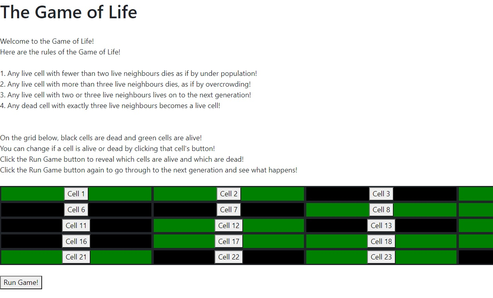

Conway's Game of Life
Conway's Game of Life is a game where cells live or die based on how many living neighbours they have. After creating the core function with test-driven development, I made a small implementation of the game using Object-Oriented Programming in Javascript.

My new challenges in creating Conway's Game of Life were:
-
Getting the game to update whether each cell is alive or dead after a generation,
and then to update how many living neighbours each cell has.
-
Applying the above to every cell in the game.
To update cells and their number of living neighbours:
-
I used the core function, developed through TDD, to update the alive property of each cell - simple enough.
-
I assigned each cell an ID, and created a function that makes a list of linked cells' IDs, then uses it to check whether those cells are alive, and adds living ones to a list. Finally, the length of the list becomes the number of living neighbours.
To apply this to every cell in the game:
-
There may be a more elegant way to do it, but I ended up creating a cell Zero, which doesn't appear in the game itself, but is linked to every cell that is in the game.
-
This allowed me to iterate through every cell using cell Zero's list of linked cells.